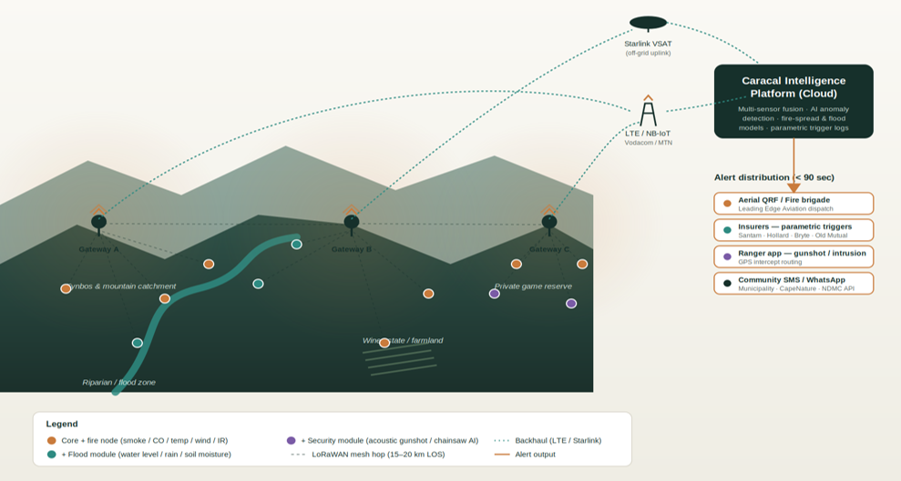

INTEGRATED WILDFIRE EARLY WARNING
Detect earlier.
Understand faster.
Respond smarter.
Caracal Environmental is developing an integrated wildfire intelligence platform that combines AI-enabled camera detection, field sensors and satellite data to identify fires earlier, understand how they are developing and support faster response.
Explore the systemTHE CHALLENGE
In wildfire response, minutes matter.
Wildfires can spread rapidly across large and difficult landscapes. Early detection is critical, but detecting smoke is only the beginning.
Responders also need to know where the fire is, how conditions are changing and what areas are most at risk.
Caracal brings these different sources of information together into one operational picture.
THE CARACAL SYSTEM
One platform. Multiple layers of fire intelligence.
The Caracal system integrates three complementary sources of environmental information — cameras, ground sensors and satellite data — through a central wildfire intelligence dashboard.
Each technology performs a different role. Together, they provide a more complete picture of wildfire risk, detection and response.
Detect
AI-enabled cameras continuously monitor the landscape and identify emerging smoke plumes as an early indication of fire.
Alert
When a potential fire is identified, alerts are communicated rapidly to relevant users and response teams.
Ground-truth
Field sensors provide local environmental measurements that help verify conditions and track the developing fire on the ground.
Respond
Camera, sensor and satellite information is integrated through the Caracal dashboard to support informed, real-time response.
HOW IT WORKS
From landscape observation to real-time action.
The Caracal system is designed around a simple principle: no single technology provides the complete fire picture.
AI Camera Network
Cameras continuously scan high-risk landscapes.
AI-based image recognition identifies smoke plumes and flags potential ignitions for rapid alerting.
Field Sensors
Environmental sensors provide local information from within the landscape.
These measurements help validate fire conditions and track the event as it develops.
Satellite Data
Satellite-derived environmental data provides the broader landscape context.
This information helps identify where conditions are favourable for fire ignition and spread.
Caracal Dashboard
All three data streams are brought together into a single operational platform.
Users can see fire alerts, environmental conditions and risk information in one place.

EARLY DETECTION
AI eyes on the landscape.
The camera network forms the primary early-warning layer of the Caracal system.
Cameras positioned across strategic viewpoints continuously monitor the surrounding landscape. Computer-vision models are used to identify visual signatures associated with emerging smoke plumes.
When a potential fire is detected, the system generates an alert that can be assessed and communicated to relevant responders.
GROUND-TRUTH
Knowing what is happening on the ground.
Cameras provide rapid visual detection. Field sensors add another layer of information from within the landscape.
Measurements such as temperature, smoke, carbon monoxide, wind and other environmental conditions can help verify conditions associated with a detected event.
As a fire develops, these sensors can also contribute local observations that help responders understand changing conditions across the affected area.
LANDSCAPE FIRE RISK
Understanding where risk is building.
Early warning starts before ignition.
Satellite-derived environmental information can provide landscape-scale indicators relevant to fire risk and potential fire behaviour.
By combining this broader risk picture with real-time camera and sensor observations, Caracal aims to move from simply detecting fires towards providing integrated wildfire intelligence.
THE CARACAL DASHBOARD
One operational picture.
The Caracal dashboard is where the system comes together.
Camera detections, ground-sensor observations and satellite-derived fire-risk information are integrated into a single interface designed to support situational awareness and real-time decision-making.
Live Fire Alerts
Potential fire detections are flagged rapidly for assessment and response.
Fire Location
Spatial information helps users understand where detected events are occurring across the landscape.
Ground Conditions
Sensor observations provide local information from areas affected by or surrounding a fire.
Fire Risk
Satellite and environmental information provides context on changing landscape fire risk.
BUILT FOR RESPONSE
Better information for the people managing fire risk.
Fire Protection Associations
Supporting earlier detection, situational awareness and coordinated wildfire response.
Landowners & Farms
Providing earlier awareness of fires threatening agricultural land, infrastructure and assets.
Municipalities
Supporting disaster-management teams with integrated information on fire detections and landscape risk.
Conservation Areas
Supporting wildfire monitoring across remote and environmentally sensitive landscapes.
PILOT DEVELOPMENT
Building and testing the system in the field.
Caracal Environmental is currently developing its first wildfire early-warning pilot.
The pilot will test camera-based smoke detection, sensor integration, communications and dashboard functionality under real landscape conditions.
The goal is to develop an operational system alongside the people who will ultimately use it.
ABOUT CARACAL
Rooted in nature. Driven by expertise.
Caracal Environmental is a South African environmental technology company developing practical tools for climate and landscape risk management.
Our approach combines environmental science, technology and partnerships to transform environmental information into practical action.
GET IN TOUCH
Interested in building better wildfire intelligence?
We are looking to work with fire managers, landowners, technology partners and other organisations interested in piloting and developing the Caracal system.
Contact us